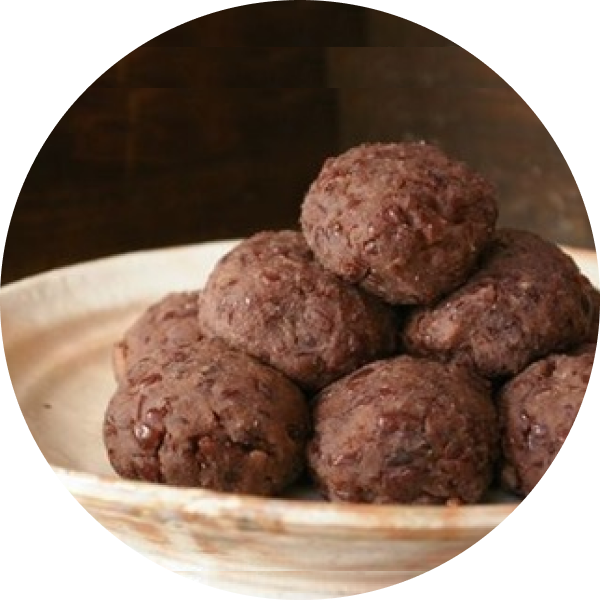

紅豆糯米糰
在日本春分、秋分及其前後各三天共七天的時間都是「彼岸」時節。彼岸就是「逝去的先祖們的靈所在的世界」，與之相對的是今世——「此岸」。春分前後叫「春之彼岸」，秋分前後叫「秋之彼岸」，因為春分和秋分這兩天，太陽會在正西方沉落，佛教認為所謂的彼岸就在西方，所以日本人會在此時祭祀祖先。一般認為，春分時節牡丹開花，所以春之彼岸時吃的紅豆沙糯米團子叫做「牡丹餅」，胡枝子，日語寫作「萩」，秋分時節開花，所以秋之彼岸時吃的叫做「萩餅」。起初，萩餅並不拿來食用，而是用來供奉祖先的祭品。制作萩餅需要糯米、白糖和紅豆等原材料，在古代的日本，白糖是很昂貴的食物，紅色的紅豆也被認為有「除惡」的作用。在彼岸時節用珍貴的食材制作能夠祛除穢氣的萩餅，也是祭奠祖先的一種方式。